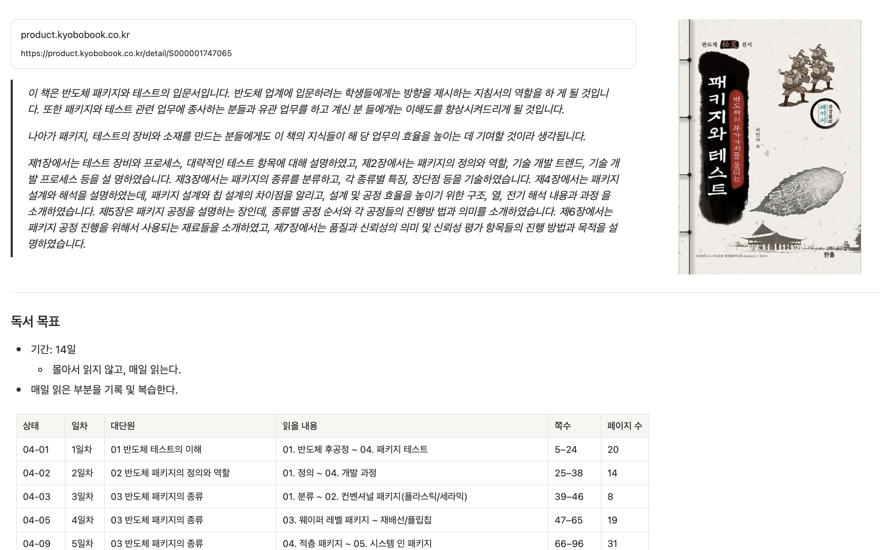
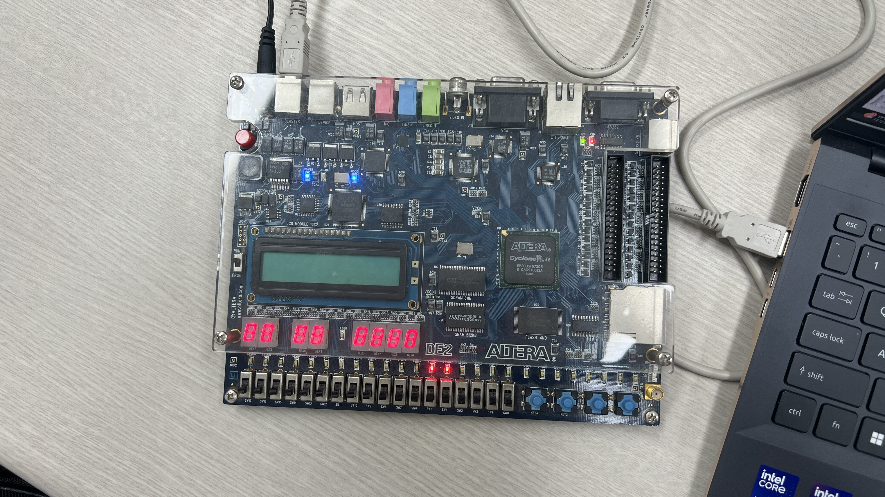
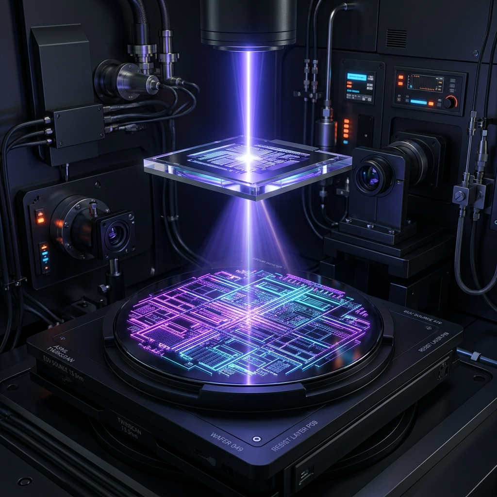
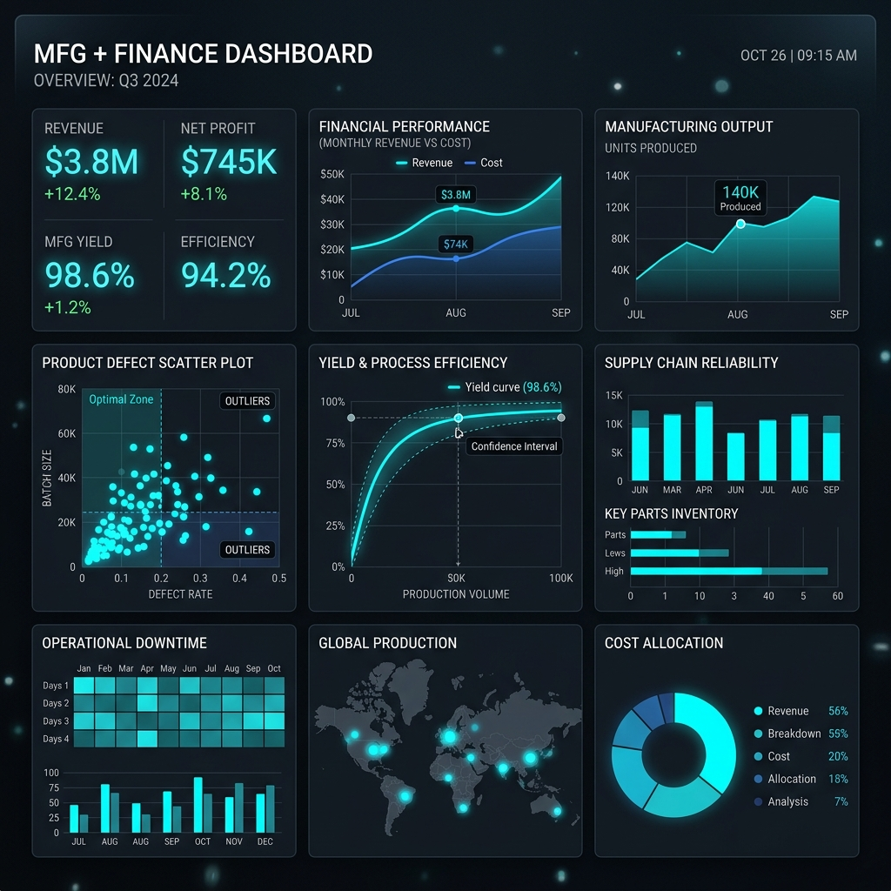
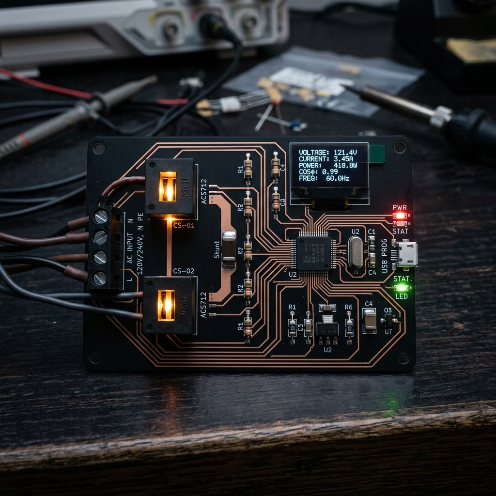
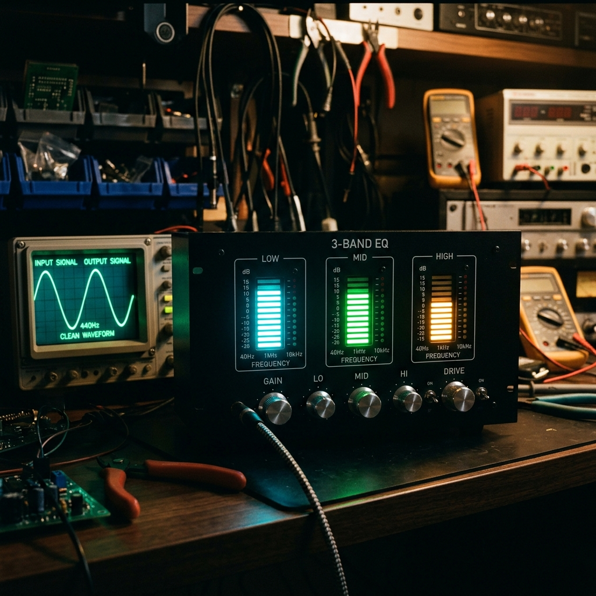
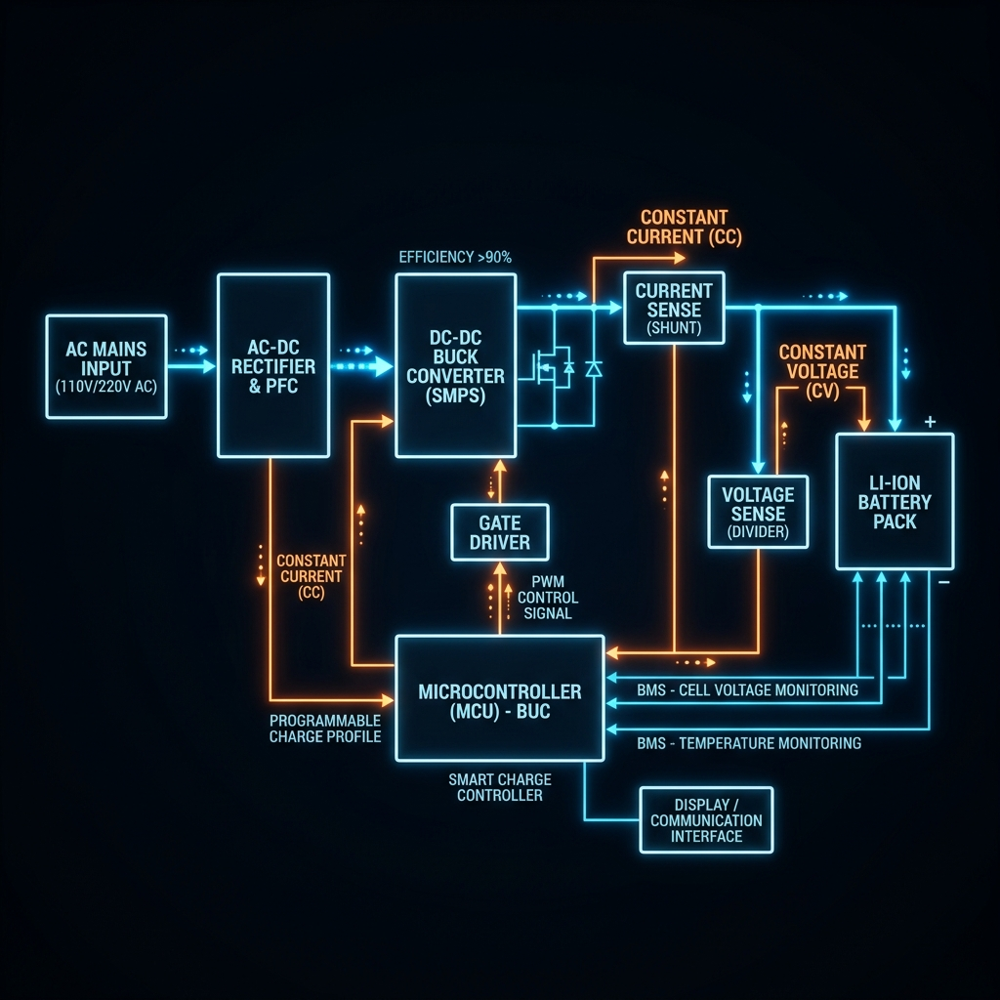
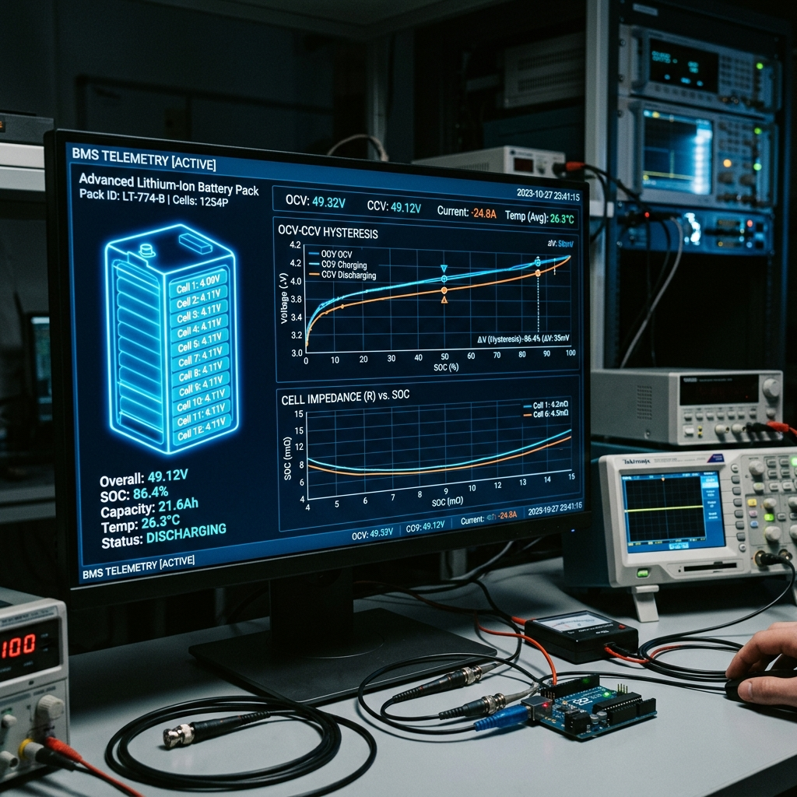
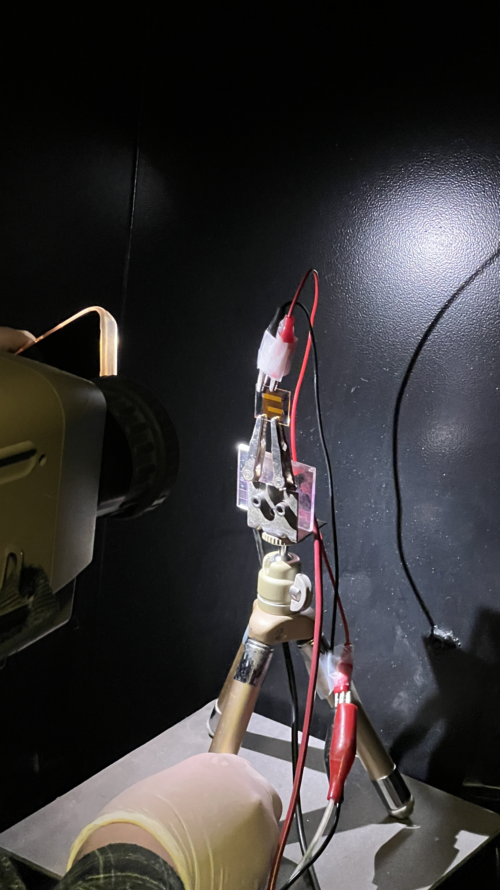

Projects
반도체 전/후공정, 아날로그/디지털 회로설계, 임베디드 핵심 수행 프로젝트 목록입니다.
Ceramic Capillary Geometry
반도체 와이어 본딩 캐필러리 형상이 First Bond 불량 모드 및 접합 신뢰성에 미치는 기계적 메커니즘을 규명하고 최적 파라미터를 도출합니다.

Packaging & Test Fundamentals
WLCSP, Flip-Chip, TSV 적층 HBM 이론부터 Warpage 휨 해석 및 SI 임피던스 매칭을 다루는 후공정 종합 엔지니어링 리서치입니다.

FPGA & Verilog HDL Systems
Altera DE2 Cyclone II 보드 환경에서 버튼 글리치 제거용 Debouncing 및 가변 분주 BCD 카운터를 설계하여 5ns 전파 딜레이를 검증합니다.

TinNO₃ EUV Photoresist
나노 스케일 EUV 리소그래피 한계 극복을 위한 무기 주석 옥소 클러스터 기반 PR 감도 향상 및 건식 식각 저항 메커니즘을 탐구합니다.

Spotfire Process Analytics
반도체 대공정 설비 로그 데이터셋을 Spotfire 시각화 프로파일링하여 전위 및 Defect 발생 유발 파라미터 간 상관관계를 통계적으로 도출합니다.

MCU AC Power Meter
Microcontroller 기반 AC 단상 전력 측정 모듈을 구현하여 전류/전압 실시간 센싱 및 전력 계산 텔레메트리 캘리브레이션을 진행합니다.

3-Band Audio Level Meter
Sallen-Key 구조 Active Filter 회로를 설계 및 검증하여 오디오 주파수 대역을 3개 밴드로 물리 분할하는 전압 증폭 검출 시스템을 개발합니다.

CC-CV Li-Ion Charger
리튬이온 배터리 안전 충전을 위한 CC-CV 전력 토폴로지 제어 보드를 실장하고 ADC 센싱 정밀 리포팅 회로망을 설계 및 캘리브레이션합니다.

Dynamic Battery SOC Tester
OCV-CCV 내부 임피던스 동적 오차 보상 수식을 임베디드 펌웨어 상에 적용하여 충전잔량(SOC) 측정 정밀도를 혁신한 계측 툴 개발 프로젝트입니다.

ITO-based OLED Fabrication
ITO 투명 전극 가공, 유기 발광층 Blade Coating 및 열처리를 통해 OLED 소자를 직접 제작하고 J-V-L 전기광학적 성능을 정량 분석한 프로젝트입니다.